来源：https://ivvygw9y2ti.feishu.cn/docx/MBE0dbCrIorcKJxImPkcAlh7n8b
各位小伙伴大家好，见贴欢喜，我是七喜。（好像押韵上了，哈哈）
过去一年的时间，我们一直在Temu平台做一些小的尝试，有幸做出了一点点小成绩，也通过 这篇文章来跟大家分享了一些内容，被加精后有很多圈友链接到我，也有幸被生财官方邀请做了一期实战派对谈，同时也作为两期的航海教练来跟大家一起学习一起生财有术，在此特别感谢生财官方的认可。
Temu目前在大力发展半托管，平台买手也是铆足了劲邀请卖家入驻，催促卖家上链接。一副要把亚马逊商家全部抢过来的阵势。
本篇文章主要想要跟大家聊一下目前Temu平台的现状以及半托管模式下的机会。
经过一年的发展，Temu的发展大家是有目共睹的，目前全托管已经开通了50多个国家，全球拥有2.263亿用户，产品类目已经覆盖到方方面面，很多圈友也在Temu平台赚到了大利润。
平台的门槛足够低所以大家的试错成本也非常的低。
个人身份证+银行卡就可以快速注册下店，然后就是不断的重复上品核价的过程，利用上新数量来解决核价低的问题。
目前全托管的人力（包括买手，核价师，图审等）在往半托管倾斜，做全托管的商家最近能明确感知到找官方人员变难了，处理一些问题也会感觉到变慢了。
这并不是说全托管不能做了，在前几天刚结束的3月份航海中，大家的上岸率是非常高，在航海好事中大家拿到的正反馈也非常的多。
由此可见现阶段入局全托管，精细化运营，找到有优势的产品依然是大有可为的！
全托管具体的入驻流程大家可以参看我的上一篇帖子 ，或者在生财内搜索Temu。
这里想提一嘴，骂Temu的人非常多，大部分都是集中在罚款，引导降价等等。对于这个还是见仁见智吧，依托于平台生存，平台也要赚钱。
对于全托管这里不多做介绍了，生财里相关的内容已经挺多了，大家可以自行检索，下面跟大家聊一下半托管。
Temu半托管是什么？
答：货在境外本土的商家自己导入消费者订单，自行发货履约。
Temu半托管的发展进度
答：2024年3月15日在美国站点上线，持续在开通更多的站点。
商家的角色和责任
答：开设半托管店铺， 负责上传商品并维护库存，可跳过寄样、审版、图片任务步骤。
平台的角色
答：将商家的商品加入美国或欧洲站点进行销售及客服
半托管模式主要面向货在境外本土的亚马逊、独立站等商家，主要目的为解决商家的清库存压力。
区别于全托管模式，半托管模式下由商家自行发货履约，没有寄样和审版等环节，且商家有商品的一定定价权，但不能超过亚马逊。目前Temu上对于半托管产品的定价是在亚马逊同款前台产品售价的85折，也就是说半托管的产品最终到达商家手里的利润相对于全托管是大出来很多的。
不知道大家有没有一种感觉是-Temu是想把亚马逊的卖家拉过来。
目前半托管属于刚开始阶段，有海外仓的商家已经开始出单了，并且表示流量很大。没有海外仓的第一批商家目前第一批次的产品还在海上没有入库。
平台买手最近在疯狂的拉人入驻以及上产品链接， 即使是晚上十点也会打电话催促商家尽快上产品链接。这种情况只有当初全托管刚刚上线的时候才有，买手求着商家去入驻上产品， 后来平台类目全了之后，买手几乎不搭理新卖家和小卖家。
目前半托管从买手疯狂催促卖家入驻上连接这点上来看，半托管还处于产品极度匮乏阶段。
只跟大家聊机会，不谈风险就是耍流氓。 我个人认为主要风险集中在以下几点：
入驻流程跟全托管店铺入驻流程相同，在店铺类别选项选择【半托管店铺】即可。
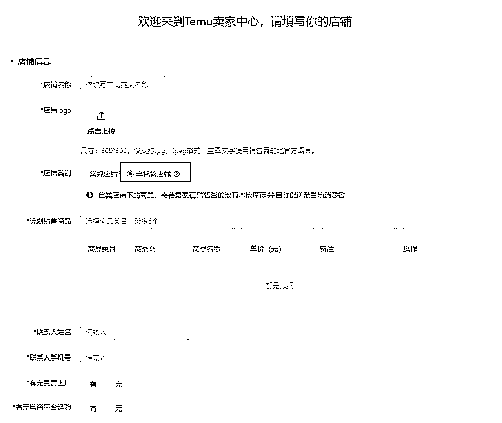
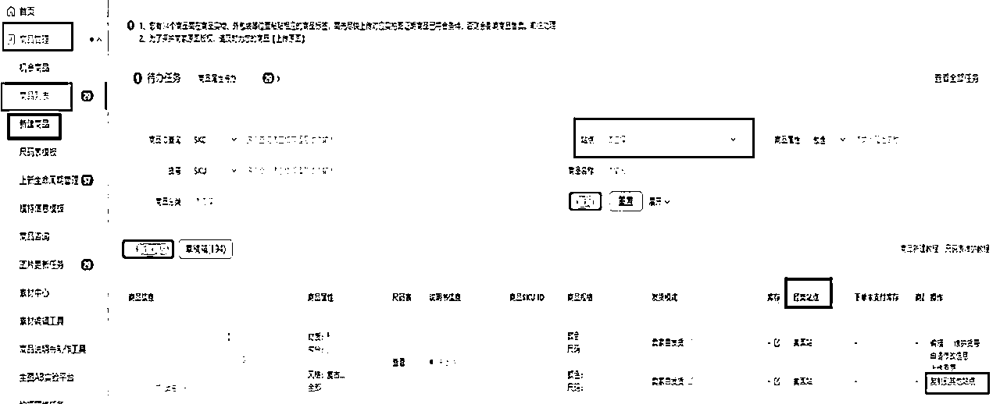
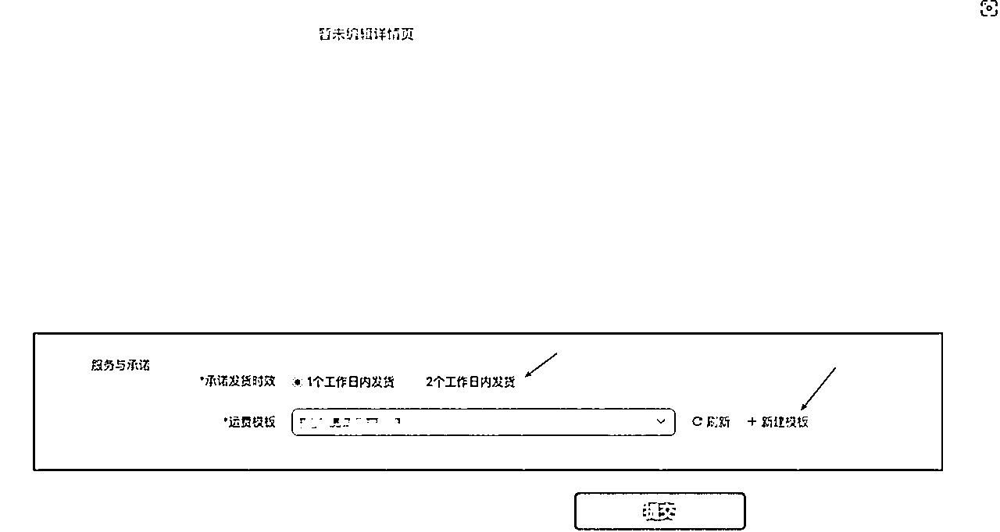
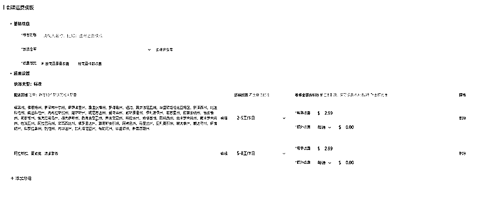
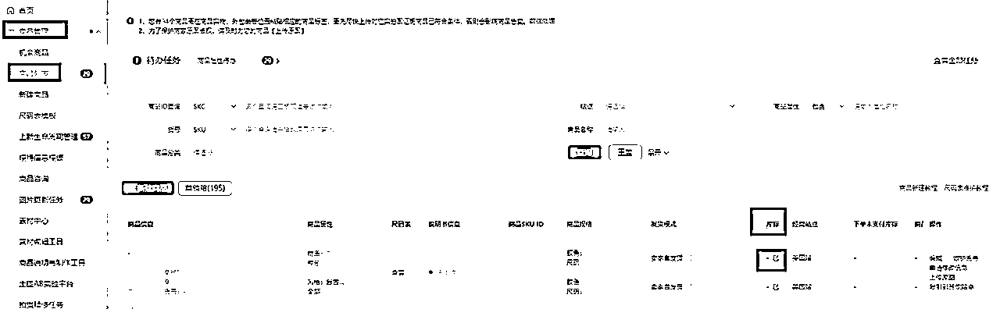
以上就是商品的SOP。
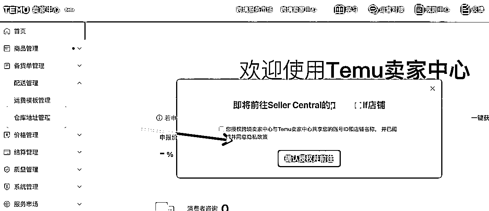
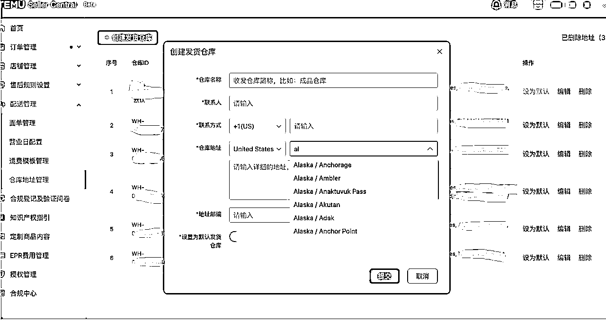
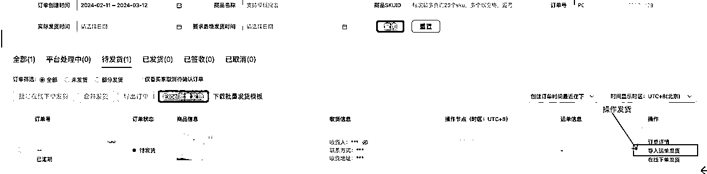
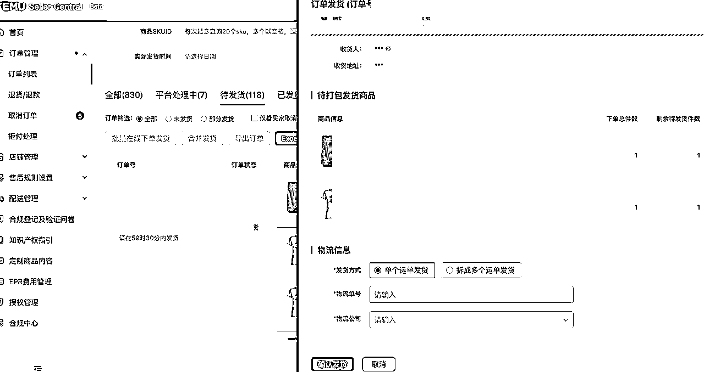
1.勾选“待发货”的订单，点击“导出订单”后，下载订单商品信息。随即商家下载“批量发货模版”，手动输入订单对应的运单号和物流公司。
2.点击“Excel批量发货”后，上传Excel中订单发货信息，完成发货。
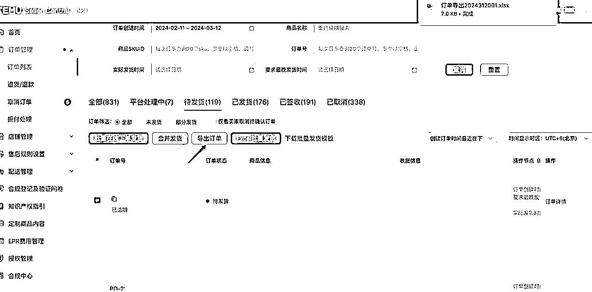
适合美国本土没有发货渠道，且希望在商家后台可以直接下单发货的商家
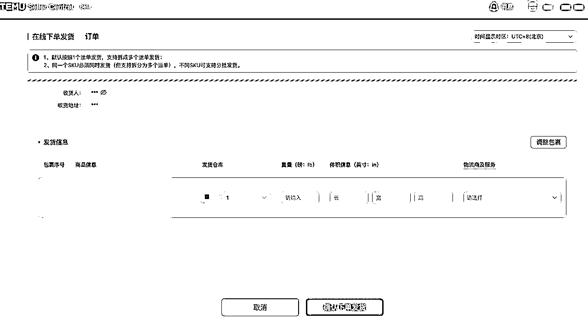
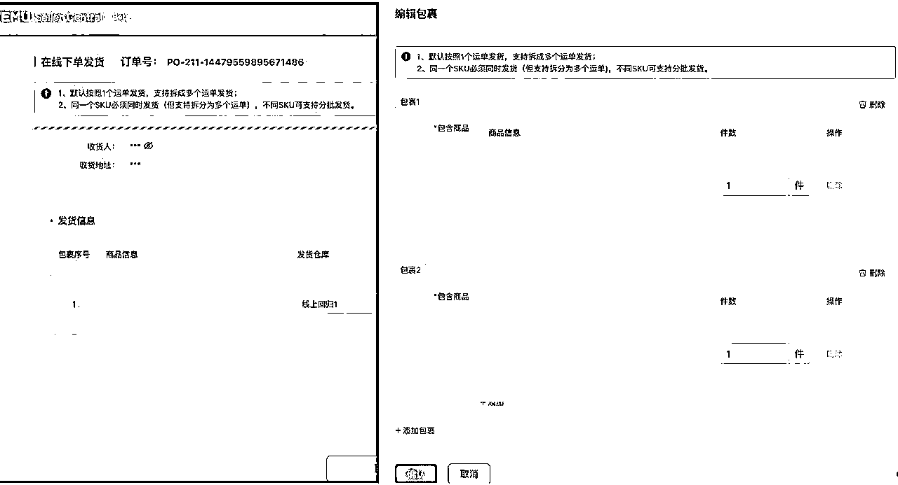
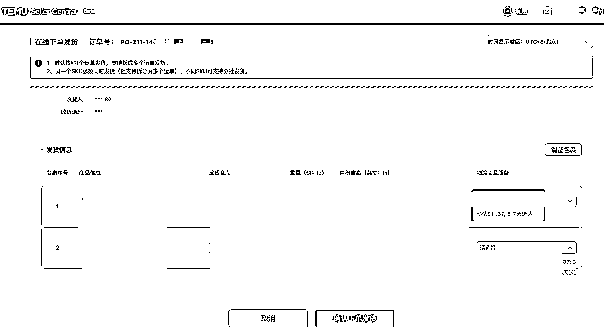
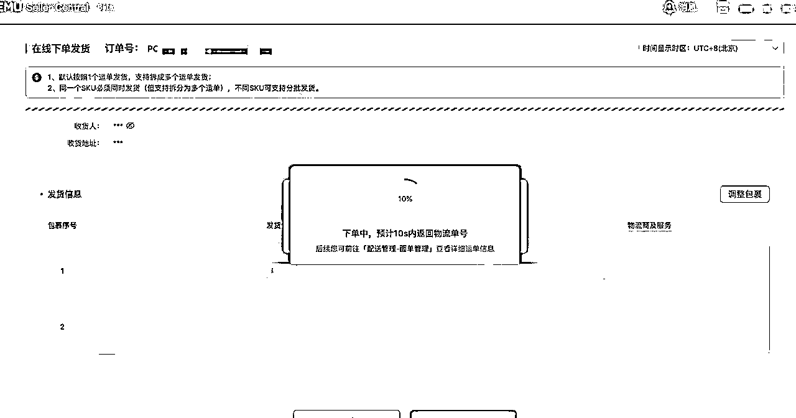
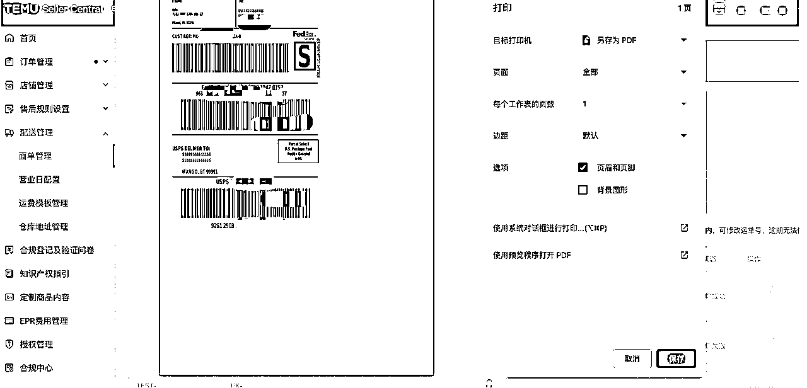
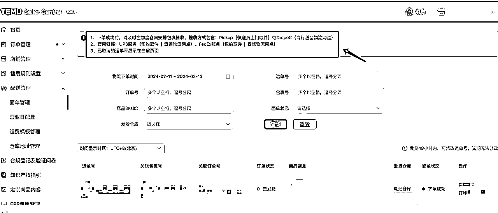
以上是商家自发货的SOP，
也可以使用平台对接仓进行发货，Temu平台以线上合作对接形式将订单推送到半托管商家已入住的对接仓内。对接仓接收订单后作业订单，发货及运单明细也可以通过线上对接形式返回temu平台。
大家看到这里应该是对Temu半托管有了一个基础的认知了，不知道大家有没有想到按照目前半托管的模式，国外卖家想要在Temu上销售自己的产品只需要找一个国内人的信息注册店铺就可以了，产品和发货流程都在当地，对于在国外的华人那就更方便了，身份信息用自己的就可以了。
以上是对于半托管部分跟大家分享的内容，半托管目前处于刚开始的阶段，有海外仓资源的圈友可以关注一下。
希望本文能对大家有帮助。
另外，有海外货盘资源的圈友，求链接！
最后，祝大家2024年暴富；扬帆正当时，一起生财有术！
以上部分图片引用自Temu卖家课堂。